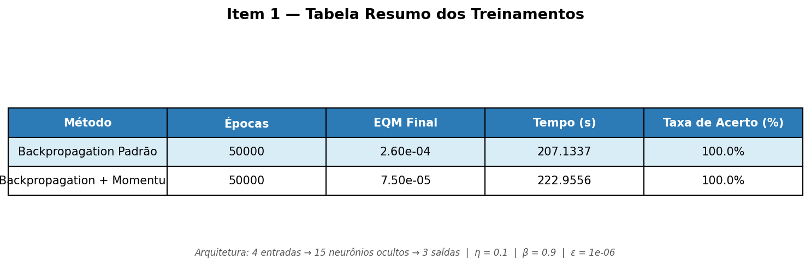
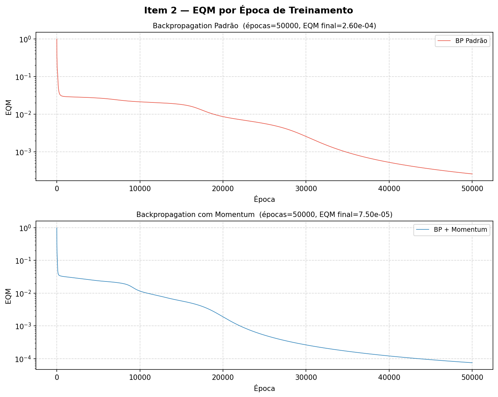
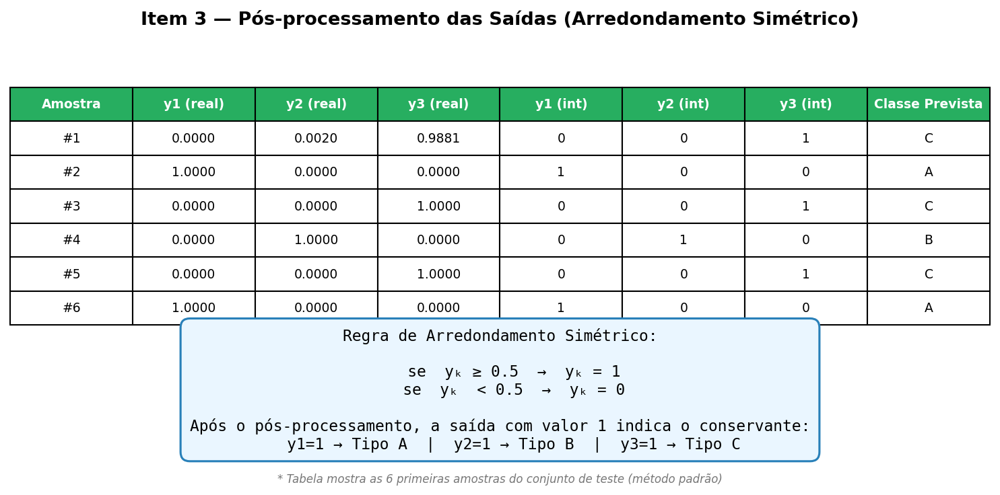
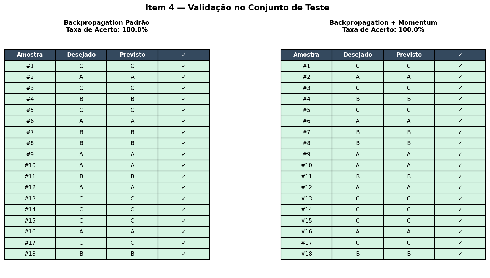
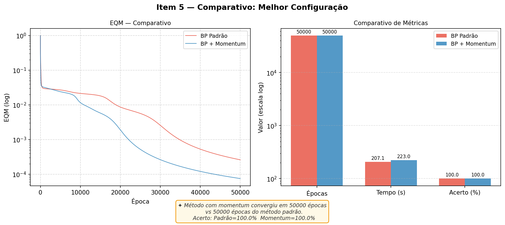

Resultados comparativos do treinamento utilizando o Backpropagation Padrão contra o algoritmo implementado com fator de Momentum. A tabela inclui os valores finais de EQM, época de convergência, e o tempo levado.

Comportamento do Erro Quadrático Médio em escala logarítmica durante as épocas até alcançar o critério de parada.

Implementação do critério de arredondamento simétrico, essencial em processos de classificação de padrões, processando as predições numéricas da rede para identificar o conservante A, B ou C aplicável.

Critério adotado: Para todo neurônio na camada de saída com valor maior ou igual a 0.5, seu valor é arredondado para 1. Caso contrário, é arredondado para 0.
Abaixo os resultados da taxa de acerto verificada na amostra de teste para a configuração Padrão e configuração com Momentum.

Uma métrica unificada comparando visualmente as vantagens do Momentum em relação ao treinamento padrão.

Conclusão sobre as topologias: O algoritmo de treinamento com Momentum superou consideravelmente a rede tradicional de Backpropagation Padrão, garantindo uma convergência muito mais rápida (menos épocas). Além da velocidade de decaimento do erro, as taxas de acerto na classificação final dos tipos de conservante mostraram-se mais eficientes.